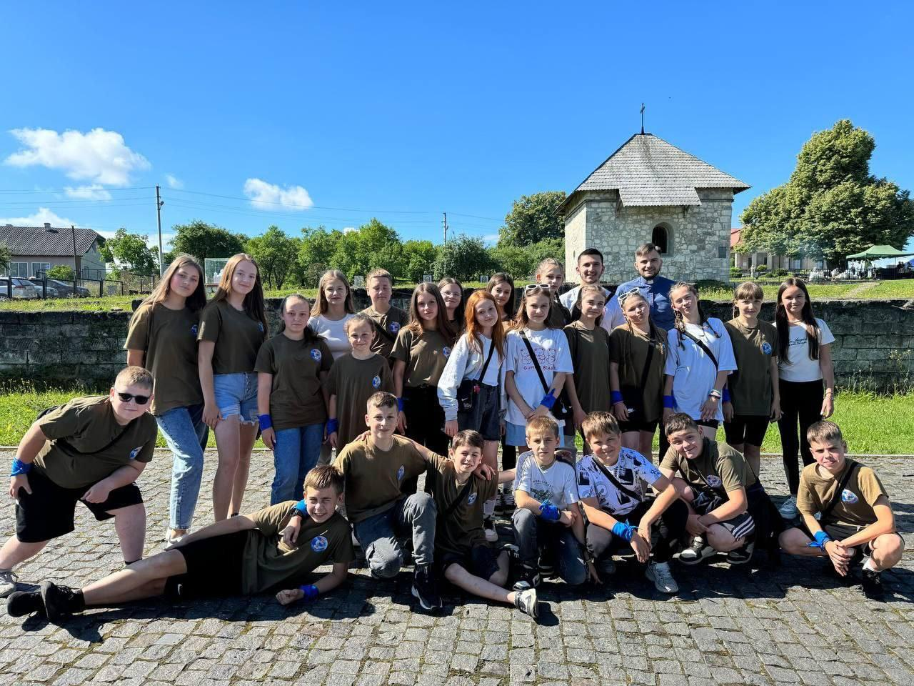
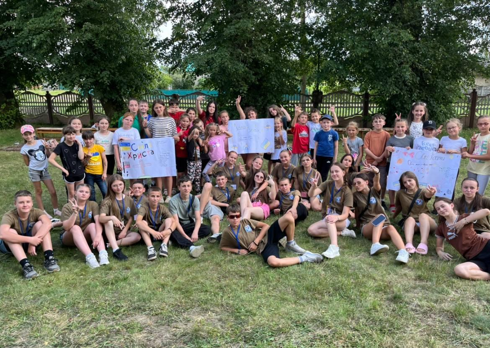
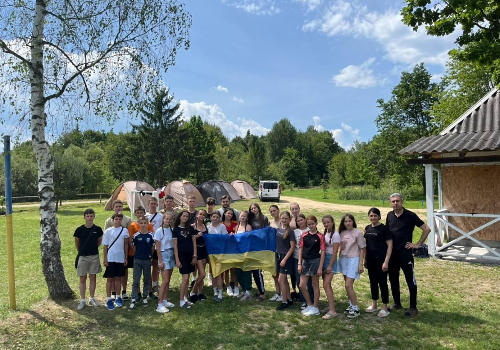
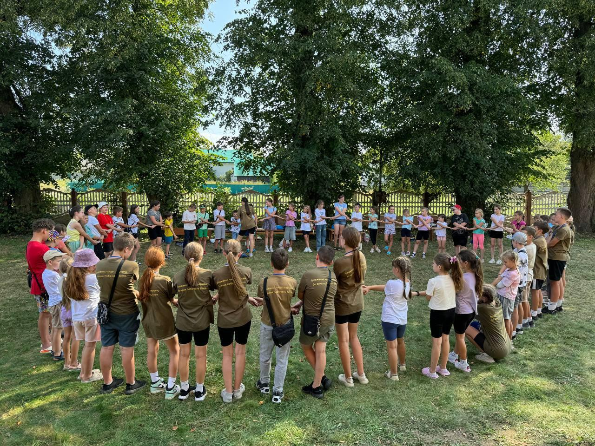
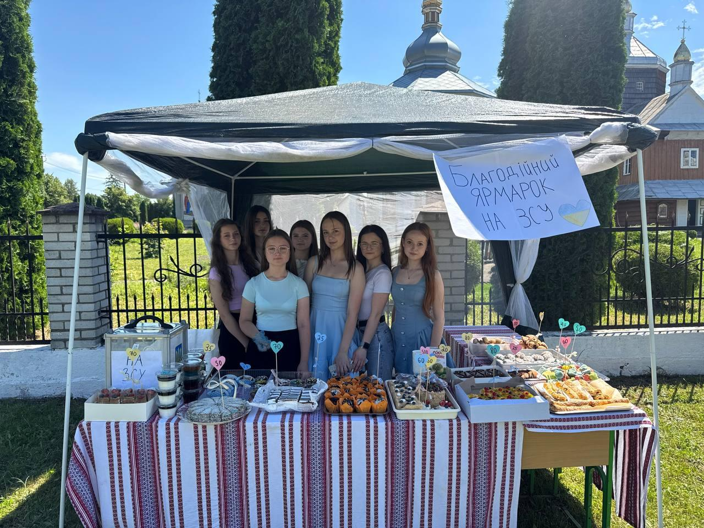
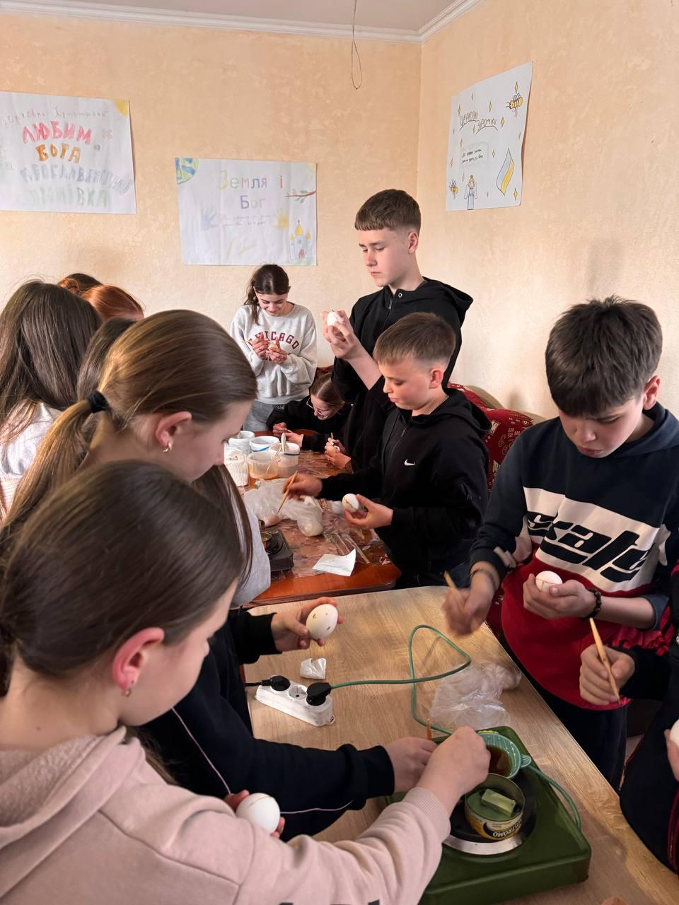

«Українська молодь — Христові» (УМХ) — одна з найвідоміших молодіжних організацій Української Греко-Католицької Церкви, заснована з благословення митрополита Андрея Шептицького у 1930-х роках. Її головною метою було духовне виховання молоді, формування християнського світогляду, любові до Бога, Церкви та України. Від початку свого існування організація прагнула об'єднати молодих людей навколо євангельських цінностей, виховуючи їх у дусі відповідальності, взаємоповаги, жертовності та активного служіння ближнім.
Сьогодні спільнота УМХ продовжує свою діяльність, допомагаючи молоді поглиблювати духовне життя, відкривати свої таланти та активно долучатися до життя парафії. Через спільну молитву, навчання, волонтерську працю та християнське служіння молоді люди вчаться жити відповідно до Божого Слова та бути живими свідками Христової любові.
На парафії Воскресіння Христового села Липівка спільнота «Українська молодь — Христові» є однією з найактивніших парафіяльних спільнот. На сьогодні вона налічує 27 учасників.
Щотижня учасники спільноти збираються на спільні зустрічі, під час яких читають і роздумують над Святим Письмом, проводять біблійні науки, спільно моляться та планують майбутні парафіяльні ініціативи. Такі зустрічі допомагають молоді глибше пізнавати Бога, зміцнювати віру та будувати дружні стосунки між собою.
Важливим напрямком діяльності УМХ є праця з дітьми. Молодь регулярно проводить катехизації для молодших парафіян, допомагає їм краще пізнавати Святе Письмо, вивчати основи християнської віри, молитви та церковні традиції. Через ігри, творчі завдання та цікаві духовні заняття діти навчаються жити за Євангелієм і відчувати себе частиною великої парафіяльної родини.
Особливе місце у діяльності спільноти займає організація літніх християнських таборів. Щороку молодь готує для дітей насичену програму, яка поєднує катехизацію, молитву, спортивні змагання, квести, творчі майстер-класи, ігри та командні активності. Такі табори допомагають дітям не лише цікаво провести канікули, а й зростати у вірі та християнських чеснотах.
Члени УМХ також активно організовують благодійні ярмарки, кошти з яких спрямовуються на підтримку потребуючих, розвиток парафії, проведення дитячих таборів та допомогу українським військовим.
Своєю активністю, відкритістю та бажанням служити ближнім учасники спільноти «Українська молодь — Христові» роблять вагомий внесок у життя парафії. Вони є прикладом того, що молодість може бути часом духовного зростання, відповідальності та жертовного служіння Богові й людям. Саме тому УМХ залишається важливою частиною парафіяльної спільноти, виховуючи нове покоління свідомих християн, які люблять Бога, свою Церкву та Україну.





